k-Day 108｜避風的牛
六點起床，衣服還是濕的，打開窗戶通風。外套和褲子穿在身上吹個風應該就乾了吧。
好久沒幫輪胎補氣，鏈條也擦拭乾淨重新上油。
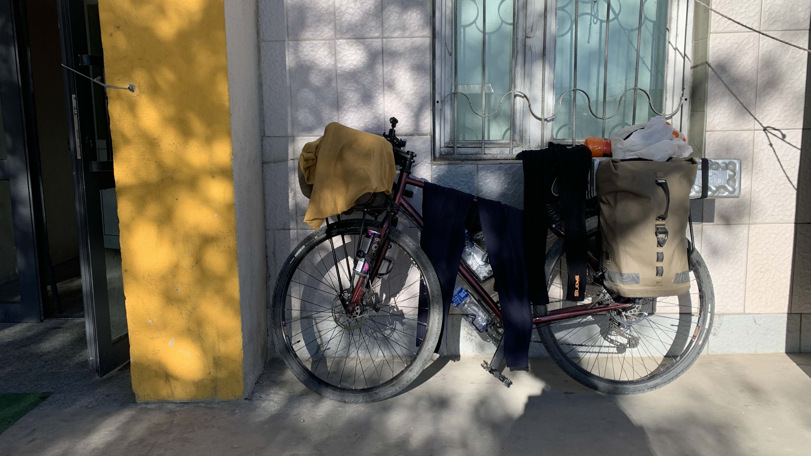
八點整門房準時來敲門提醒付款，推車到大廳後老闆還沒到，那麼就先把衣服拿出來曬太陽吧。
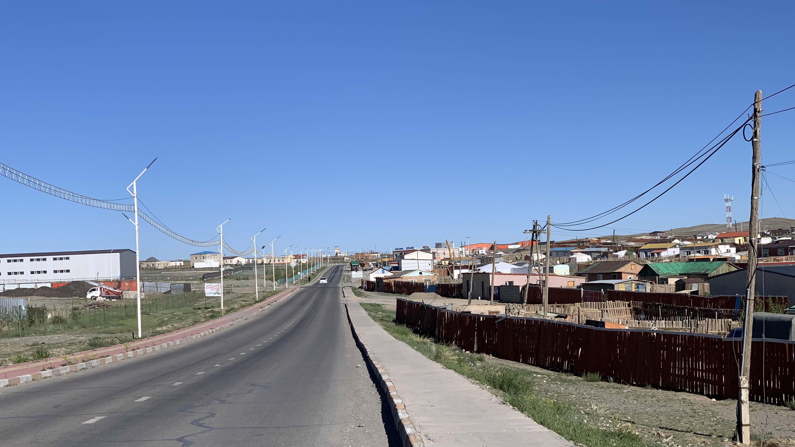
今日迎來久違的小逆風，踩著上坡也特別順暢，體感上甚至有點微微的順風？
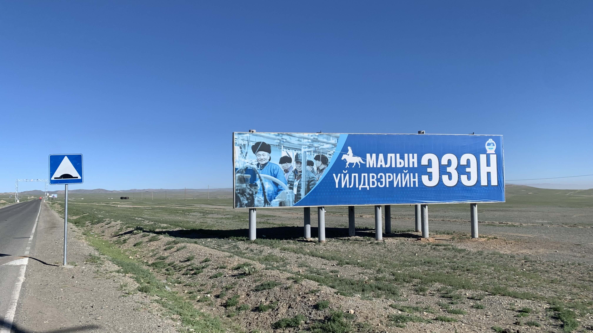
昨天進城時也看到這個告示，穿著傳統服飾的人在搭公車，不確定是什麼廣告？
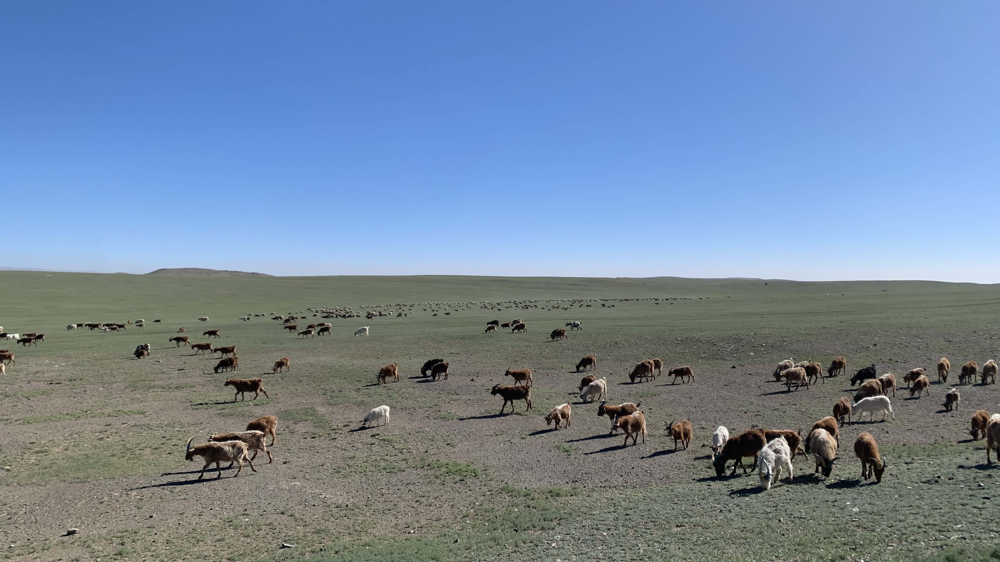
經過大片草坡時對向來了三輛自行車，興奮地和他們打招呼。一直很猶豫要不要切土路直接往口岸走，結果三位看了地圖後都說不行，倒是往西後有一條更快的南向路線是柏油路。
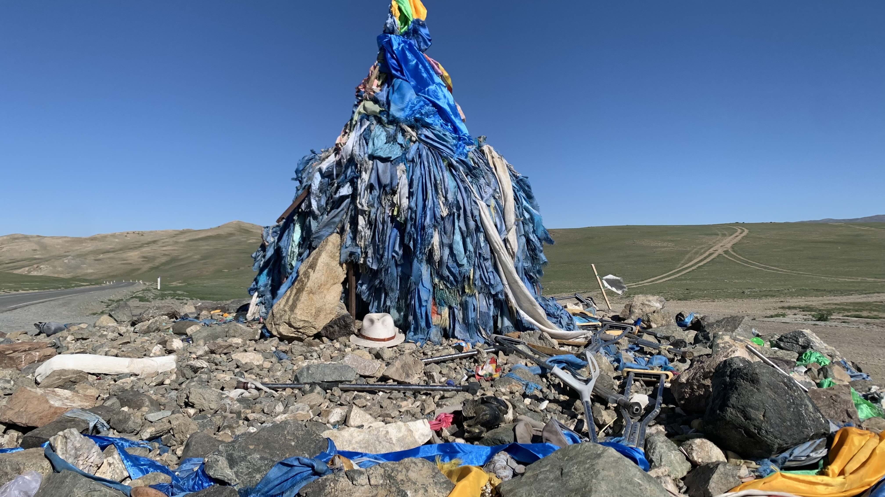
獲得有效資訊後看到一座特別的敖包，上面不知為何放了很多拐杖。
上週學到的爬坡姿勢經過前幾天的風牆訓練似乎更順暢，中午前多趕路是可行的。
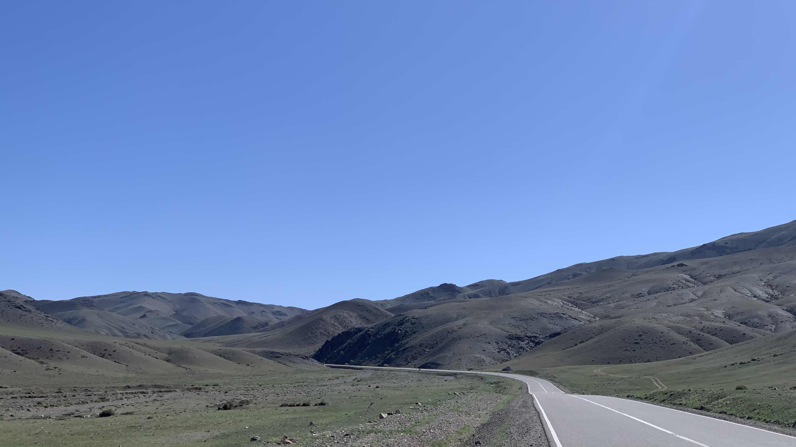
一路上兩旁都是這樣的山谷，夾著蜿蜒平整的柏油路。
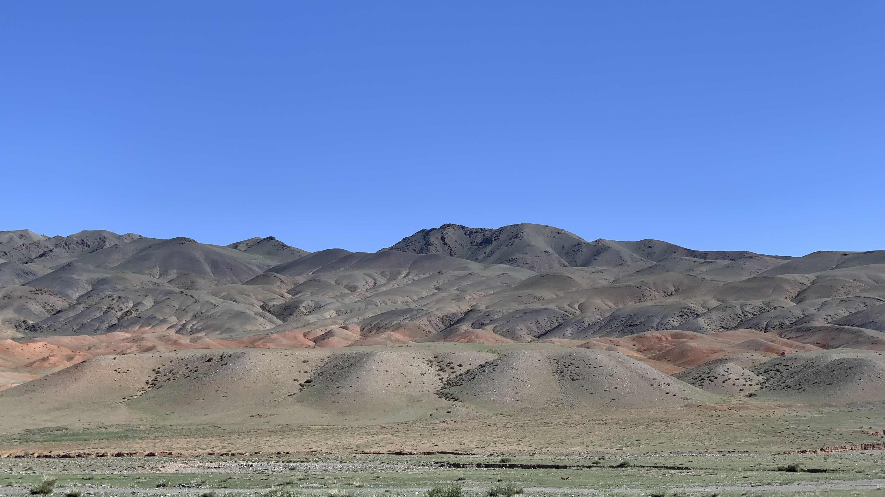
拍這兩張照片是因為有輛卡車從城鎮邊緣就一直跟著我，第一次是停在路邊，司機開門下車看著我，我點頭打了招呼。對方問我要到科布多嗎？我回是的就離開了。
第二次則是爬著上坡時感覺後方有車輛怠速的聲音，於是讓到路肩。司機沒有超車，而是下來要我上他的車跟他一起過去。當然是搖搖手拒絕。
看著司機離開，往前騎了一段，發現同樣的綠色布篷很緩慢地在對面斜坡移動，所有車輛都迅速超車，連二十三號都在下坡時超過他。
超車後司機還是開在我後面，被跟了十幾公里覺得不對，也或許只是車子出了問題。為了排除可能性，將二十三號停在路邊，假裝拍照喝水，偷偷觀察司機是否下車檢查車輛狀況。
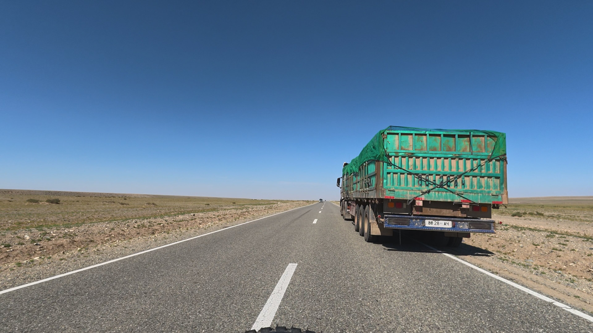
司機在前方不遠處的路肩停下，並沒有下車檢視。決定打開運動相機，主動靠近拍下車牌。
昨晚查過33公里處會有個休息區，也許有其他車輛停留，必須把狀況和車牌照片告訴其他人，也思考著該聯絡哪個在蒙古認識的人。
確實不是多心，在我經過車頭後，卡車又開始行駛，仍然跟在我後面。已經跟了二十幾公里，即便今天狀態再好，我也沒自信自己的速度能夠和卡車相提並論。一直聽到後方有車子貼著的引擎聲，完全搞不懂為何要跟著我，只能死命踩踏板。
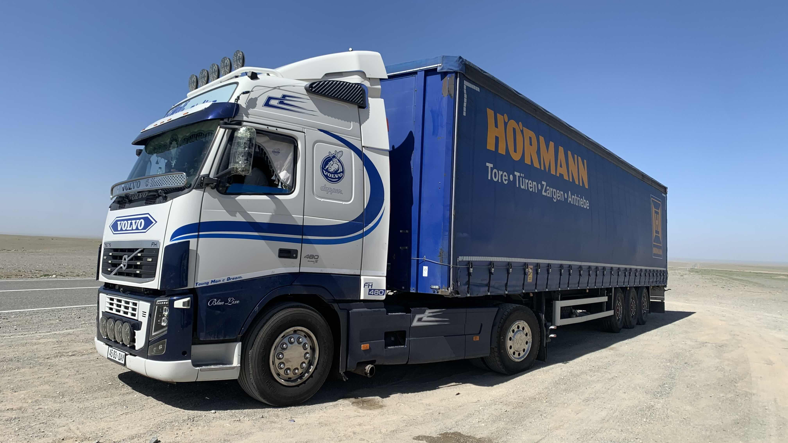
爬上高處，看到休息站的招牌，空地上停著一輛白色卡車和一輛正要離開的轎車。趕緊衝下坡停在卡車門邊，主動和裡面的司機攀談。
司機大哥問了我的路線，拿著麵包和汽水下車聊天。綠色布篷卡車緩緩停靠在白車旁邊。我吃著麵包，指著車尾和司機說：「我今天早上已經看到這輛車四次了。」可惜司機大哥聽不懂英文，問我要不要喝咖啡，又讓車上的人泡了咖啡給我。
手機沒有網路，無法翻譯。司機讓車上的兩個小弟下來幫忙，看著他們拿手機在空中舉著找訊號，想起離開此處後有兩百公里左右幾乎沒有人煙，更不用說手機訊號了。
將運動相機連上手機，指著螢幕裡的車，和大家說我今天早上已經看到他四次了！司機好像理解了，大概是說那個人有點問題。我請他們拍下手機上的車牌，說：「如果我死了，可以拿給警察。」司機笑著說不會的。
此時旁邊的小弟打給了會說英語的朋友，把今早的經過告訴電話那頭的人，詢問這狀況是否正常。原以為會聽到「那人只是有病，不要理他。」的回應，沒想到對方說這樣繼續騎會有危險，要我把電話交給他的朋友。幾個人對著電話溝通了一陣，司機走到路上攔了一輛車，又把電話交給我，我問：「如果我想繼續騎可以嗎？還是你覺得不安全？」電話那頭的聲音很篤定地說：「有危險。我的朋友找了一輛車，我建議你上車。他們會帶你到下一個城鎮，搭車到那裡，這樣可以甩掉那台卡車，你再自己繼續騎。」
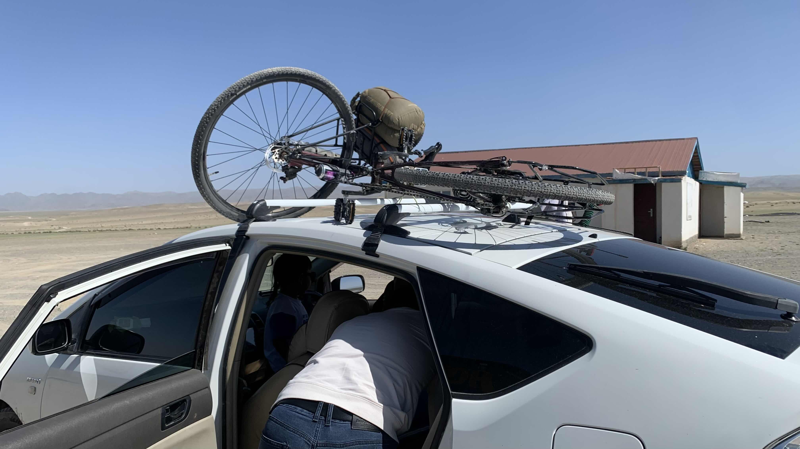
聽完這句話我立刻點頭，司機帶我到攔下的轎車，指著車門裡說裡面還有這些人，可以上車。看著座位上的小孩和媽媽，答應後大家開始幫我把行李搬到車廂，二十三號則綁在車頂上。上車前司機和應該是爸爸的轎車駕駛握了一下手，算是把我交給他了。
就這樣坐著車離開休息站。往西的路上看著窗外的景色，駱駝穿越馬路，貧瘠的地面和綠色的小草叢，應該要巨大到產生壓迫感的山脈，窗外不時出現黃沙小龍卷，還有今天微微的逆風。
大致的路是往下的，左邊的山越來越高，遠方積雪的山頭看起來既小又遠，一副和我沒有任何關係的感覺。
休息時和我一起坐在後座的媽媽很順手地把空寶特瓶和垃圾往外面丟，動作熟練地似乎對此完全沒有意識。爸爸抽完煙上車，較年長的孩子打開車上的喇叭，是類似電音舞曲的音樂。最小的弟弟拿起手機。沒有風聲的時候，人類用喇叭裡的電子音樂和手機裡的短影音填滿車廂。
路只是不斷退後。一個人騎著自行車在逆風中喘氣，偶然抬頭時看見巨大的黑色山脈上覆蓋著積雪，那一刻會是什麼樣的感覺？坐在車子裡面經過的我永遠也不會知道了。
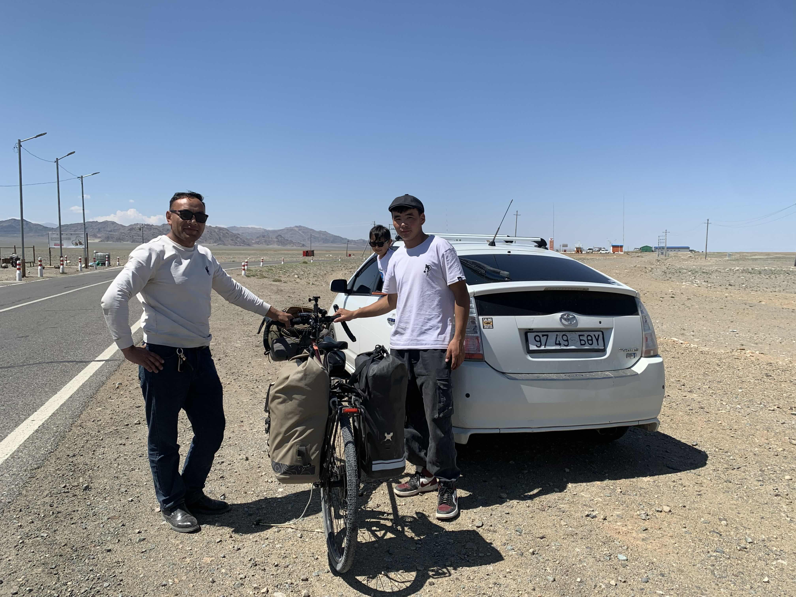
下午三點抵達曼罕縣的交叉口，開車的爸爸停下車，兒子指著叉路說那裡就是曼罕。下車後兩人幫我裝上馬鞍包和飲水，和他們道謝後拍了一張照片，牽車到路口的警察站整理行李。
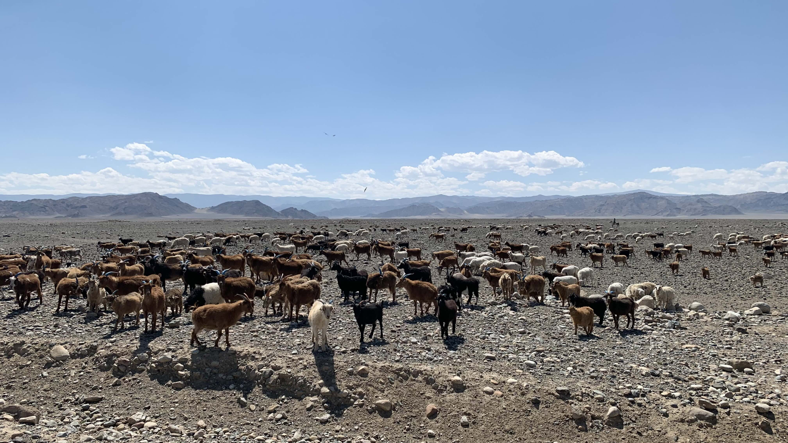
進城的路口有一名騎著白馬的女子正在趕羊，看看地上好像沒有可以吃的東西，這些羊都在啃什麼呢？
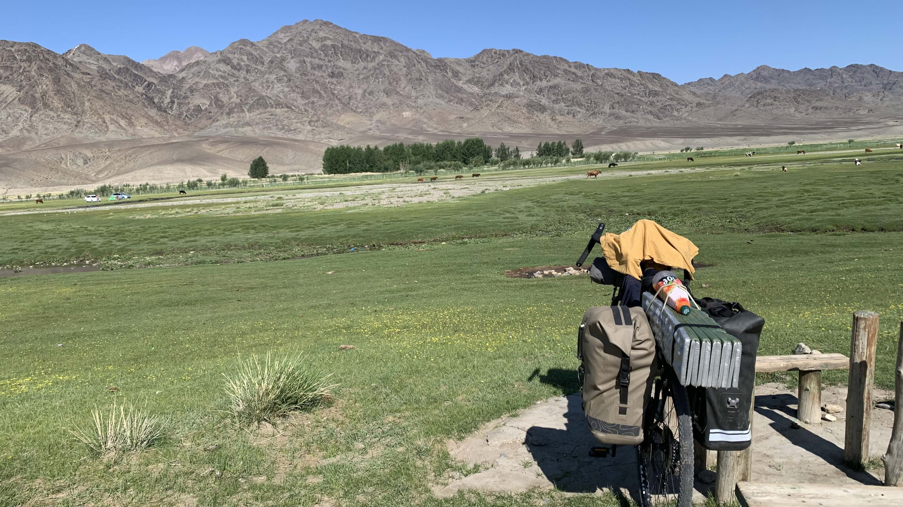
實在提不起勁，完全沒有預料到旅程中會有兩百公里的路不是由自己完成的。
城鎮後方有一大片草坪，不少小孩正在搭帳篷、玩水、騎自行車。就坐在此處把沒曬乾的衣服拿出來晾曬，此刻的情緒需要消化。
理性上我並不覺得早上搭車的決定是錯的，要是一路被卡車跟在屁股後面騎進荒野，肯定沒辦法安心，甚至不敢在路邊搭帳篷睡覺。然而腦內的情緒相當複雜，沒辦法因此釋懷。對於這段路線一直是緊張又期待，阿爾泰是蒙古的路線中相當特別的一段，而我再也不可能拖著整車行李，從京都開始再重來一次。也就是說，我此生都不會知道一個人喘著氣，縮著迎風的身體，雙腳發軟地抬頭看到山脈、礫石和駱駝會是什麼樣的感覺了。
為什麼那一刻我會斷然答應上車呢？我認為心裡有個底層界線，只要有任何導致我無法前進的可能，那就要斷然避開。那不只是害怕或擔心，我要到巴黎，就算阿爾泰再珍貴，它都不是終點。
坐了一會兒，是時候進城探聽住宿情報。
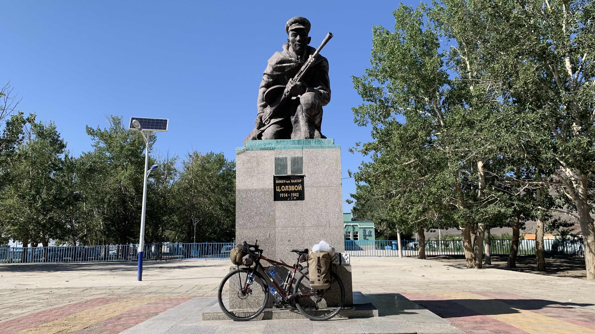
見到公園有座軍人雕像，地上沒有碎玻璃空酒瓶，是個治安良好的城鎮呢。
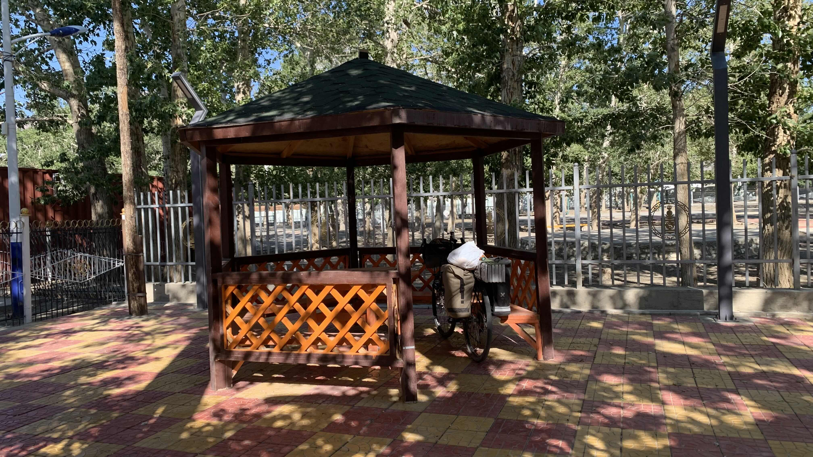
買了瓶咖啡在公園涼亭休息，查看到口岸還有多少路程。曼罕縣有相當著名的史前壁畫，在一年前規劃路線時曾經想過造訪。礙於簽證效期，並沒有出現在計劃路線中。既然今天被載到這裡，就決定住一晚，明天去看壁畫吧。
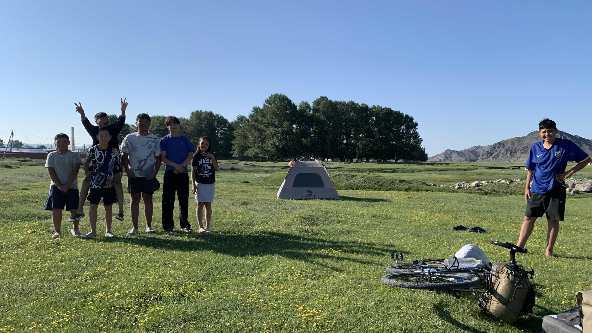
回到山下的草坪準備紮營，被右邊那位小朋友帶來這裡。他們說這裡有很多狗，但是是安全的。
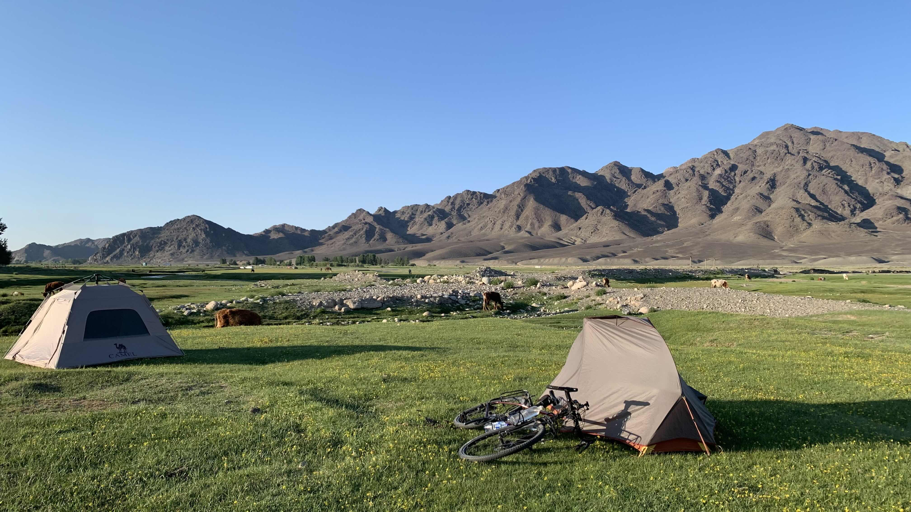
搭好帳篷後，一對兄妹開始跟我聊天。哥哥是唯一會說英文的，因此充當大家的翻譯。妹妹則回家拿了奶茶來給我喝。
喝著奶茶，兩位小朋友開始打電話給遠在匈牙利留學的姐姐。其中一位顯然不想接他們電話，另一位接起電話說：「他們堅持要我和你說話，我也不知道為什麼。」
哥哥有點驕傲地說他的兩位姊姊語言能力都很好，會說四國語言。他自己未來也想出國：「可能會去紐約或者華盛頓」說這句話時散發出平穩地可以稱之為餘裕的神情。
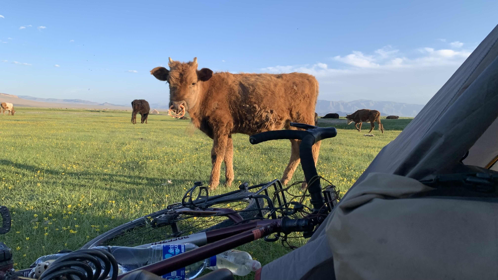
小孩回家後，一個人坐在帳篷消化情緒，突然有隻青少年牛站到帳篷旁盯著我。
沒多久三位小孩帶著排球回來。四個人進行了一場草地排球賽，直到妹妹被大人叫回家，隨後兩位哥哥也被叫回家。
少了兩百公里我還能說自己在地球上畫了一個圓嗎？關於這問題，我想到書法的飛白。今天坐在車上顯然是快速到沒有在紙上留下痕跡，但是動態並沒有停止。就只是握筆的手被提起來了，圓還得繼續畫，紙還沒破。
今日花費： 0元